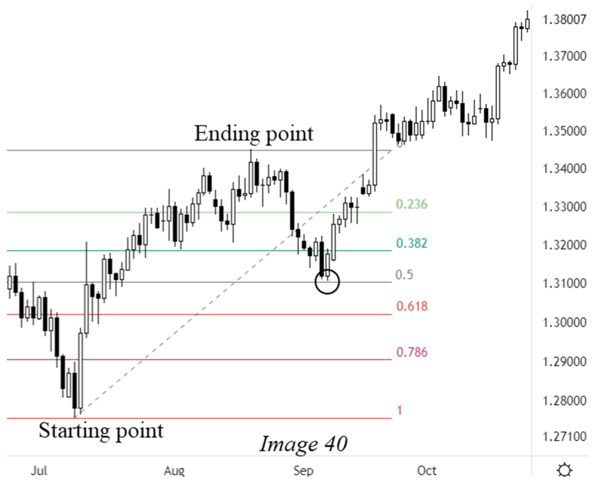
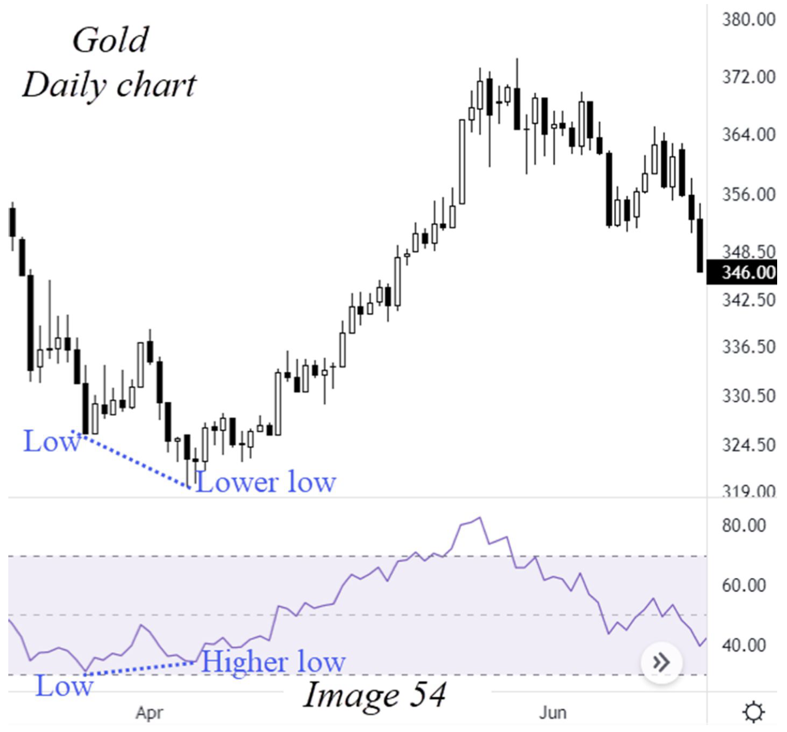

CHAPTER IV · PDF tr. 57–76
ELLIOTT WAVE OPTIMIZATION Kết hợp công cụ với Elliott Wave
Đọc trang 57–76 trong PDF, theo các mục dưới đây, rồi làm 12 câu hỏi của riêng chương này. Nội dung dưới đây là tóm lược đọc hiểu, không thay thế toàn chương gốc.
1. Fibonacci Tools 2. Elliott Wave Trading With Chart Patterns And Technical Tools Method #1 — Using the High Low Method Method #2 — Patterns & Elliott Waves Method #3 — Indicators & Elliott Waves Combining All Together! Trắc nghiệm (12 câu)
1. Fibonacci Tools PDF tr. 57–61
Phân biệt retracement đo nhịp hồi và expansion chiếu mục tiêu từ một pullback. Đọc các nhóm tỷ lệ theo đúng wave trong bảng nguồn; không chuyển chúng thành nội dung tự biên ngoài chương.

Steve Sinclair · Image 40 · PDF tr. 59 · Trích hình để đối chiếu phần đang học; nhãn gốc của tác giả. 2. Elliott Wave Trading With Chart Patterns And Technical Tools PDF tr. 61–62
Phần hai đưa ra ba bước tìm setup: High Low Method, Simple Patterns và Indicators. Đây là các cách phối hợp với count đã học.
Method #1 — Using the High Low Method PDF tr. 62–64
Chọn turning point đáng kể, quan sát từ đó đến giá hiện tại, rồi phân loại motive/corrective và đối chiếu quy tắc. Sách khuyên chuyển chart nếu chưa rõ sau khoảng quan sát ngắn.
Method #2 — Patterns & Elliott Waves PDF tr. 64–71
Theo thứ tự nguồn: Head and Shoulders → Double Top → Wedge → Triangle. Đối chiếu số sóng trước hình mẫu để chọn cách diễn giải; tên chart pattern không thay thế phần count.
Method #3 — Indicators & Elliott Waves PDF tr. 71–75
Sách chọn RSI, nhấn mạnh divergence hơn việc chỉ nhìn vùng 30/70. Gold ở Hình 54 cho giá lower low và RSI higher low; quan sát cả hai panel.

Steve Sinclair · Image 54 · PDF tr. 73 · Trích hình để đối chiếu phần đang học; nhãn gốc của tác giả. Combining All Together! PDF tr. 75–76
Phần cuối gộp ba phương pháp, không chọn một phương pháp làm tốt nhất trong mọi trường hợp.
Lưu ý khi đối chiếu nguồn Các khoảng Fib là vùng tác giả theo dõi, không phải bảo đảm giá tới đó. Phụ lục được nhắc ở trang 60 không xuất hiện ở cuối bản PDF 105 trang này. PDF tr. 60–61 Trang 40 có vị trí triangle 4/B/X; mục wave map ở trang 69 chỉ nhắc 4/B. Câu hỏi luôn chỉ rõ đang hỏi mục nào. PDF tr. 40–69 Divergence được học như công cụ hỗ trợ theo nguồn; không hứa xác nhận tuyệt đối count hay đảo chiều. PDF tr. 72–75 Trắc nghiệm chương IV Chỉ hỏi nội dung thuộc trang 57–76. Chọn một đáp án mỗi câu rồi chấm; câu chưa trả lời tính là chưa đúng. Lời giải có trang kiểm tra lại.
1. Hai công cụ Fibonacci chính trong chương IV là gì? PDF tr. 58–59
A. RSI và MACD B. Retracement và Expansion/Extensions C. Volume và Moving Average
2. Sách dùng retracement để tìm điểm cuối tiềm năng của nhóm wave nào? PDF tr. 58
A. 3, 5, C B. 1, 3, 5 C. 2, 4, B, X
3. Expansion được dùng cho nhóm wave nào? PDF tr. 59
A. 3, 5, C B. 2, 4, B, X C. Chỉ X2
4. Muốn chiếu wave 3 theo ví dụ sách, dùng anchors nào? PDF tr. 59
A. Chỉ high và low wave 3 B. Gốc 1, cuối 1, rồi chiếu từ cuối 2 C. Gốc A, cuối B, cuối C
5. Tìm cuối wave 2 bằng retracement thì kéo thước trên chân nào? PDF tr. 58 · Xem hình liên quan trong bài
A. Wave 5 B. Wave C C. Từ đầu đến cuối wave 1
6. Vùng hồi wave 4 được tác giả theo dõi là gì? PDF tr. 60
A. 23,6–38,2% wave 3 B. 100–123,6% wave 2 C. Luôn đúng 90% wave 1
7. Thứ tự ba bước tìm setup trong sách là gì? PDF tr. 62
A. Indicators → đặt lệnh → đếm sóng B. High Low → Simple Patterns → Indicators C. Sizing → backtest → MT5
8. High Low Method bắt đầu bằng việc gì? PDF tr. 62–64
A. Chọn target trước B. Chọn mức RSI 70 C. Tìm turning point đáng kể trên chart
9. Nếu chưa phân biệt motive/corrective sau khoảng quan sát ngắn, sách khuyên gì? PDF tr. 64
A. Chuyển sang chart khác B. Ép một count C. Đổi tên mọi nhịp thành impulse
10. Wedge được phần wave map liên hệ với ending diagonal ở đâu? PDF tr. 68–69
A. Wave 2 hoặc X B. Wave 5 hoặc C C. Chỉ wave 3
11. Ở Hình 54 Gold, cặp biến động nào tạo divergence? PDF tr. 72–73 · Xem hình liên quan trong bài
A. Giá higher high, RSI higher high B. Giá không đổi, RSI bằng 50 C. Giá lower low, RSI higher low
12. Kết luận của 'Combining All Together!' là gì? PDF tr. 75–76
A. Có thể kết hợp cả ba phương pháp B. Chỉ dùng RSI C. Bỏ count khi có Fibonacci
Chấm bài và xem giải thích Làm lại chương này Tải câu trả lời JSON In chương
Chưa chấm.
Lựa chọn được lưu riêng cho khóa theo chương trên trình duyệt này.
Cần bật JavaScript để chấm và lưu câu trả lời. Bạn vẫn có thể đọc chương và mở PDF gốc.
Điểm là kết quả đọc hiểu tài liệu, không phải chứng nhận đếm sóng hay hiệu quả giao dịch.
← Chương III Chương V →